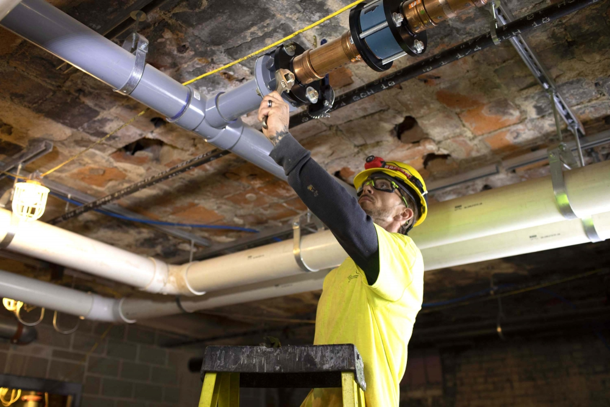
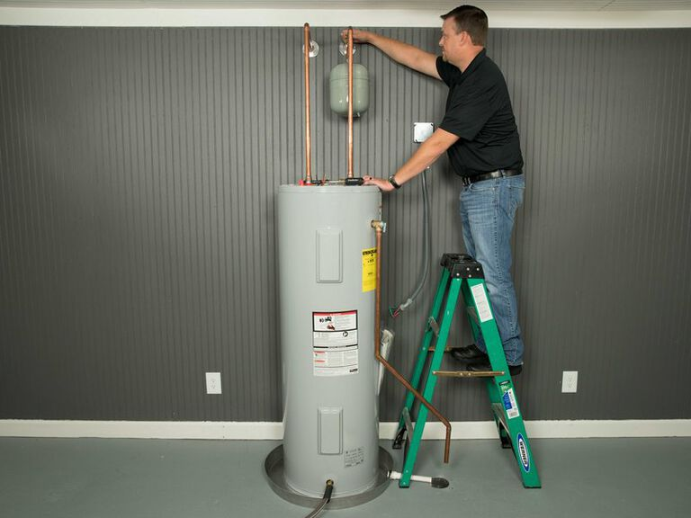

HOUSTON PLUMBING
Houston Plumbing Services
Reliable residential and commercial plumbing serving Houston and surrounding areas.
Contact UsReliable Plumbing Service in Houston
Houston Plumbing provides dependable residential and commercial plumbing services throughout Houston. Whether you need a repair or installation service, we deliver quality workmanship and reliable customer service.
Trust Our Experience
Contact UsCommon Household Plumbing Repairs
- Faucets & Sinks: Repairing leaks, replacing cartridges, and installing new hardware.
- Toilets: Fixing running toilets, replacing internal tank parts, and installing new units.
- Garbage Disposals: Clearing jams, un-sticking flywheels, and full replacements.
- Showers & Bathtubs: Fixing shower pans, replacing showerheads, and installing new valves.
- Appliances: Connecting, repairing, or relocating water lines for washing machines and dishwashers.
Pipe Repairs, Leak Detection & System Upgrades
- Leak Detection: Using cameras and acoustic tools to locate hidden leaks.
- Repiping: Replacing corroded or outdated galvanized/cast-iron pipes with copper or PEX.
- Gas Lines: Testing for leaks, repairing ruptured lines, and rerouting gas for appliances.
- Sump Pumps: Repairing or replacing pumps to prevent basement or foundation flooding.
Drain Clearing & Sewer Line Services
- Drain Cleaning: Using augers and motorized snakes to clear tough clogs.
- Hydro Jetting: High‑pressure water blasting to remove roots, grease, and scale buildup.
- Sewer Video Inspections: Fiber‑optic cameras used to locate blockages or pipe damage.
- Trenchless Pipe Repair: Fixing underground sewer lines with minimal yard disruption.
Water Heater Installation & Maintenance
- Tank Water Heaters: Replacing heating elements, flushing sediment, and installing new units.
- Tankless Water Heaters: Descaling, cleaning filters, and installing high‑efficiency systems.
- Water Softeners & Filters: Installing systems to reduce hard water and improve water quality.
Completed Projects
Pipe Fixing

Sink Installation

Sewer Service

Water Heater Installation
